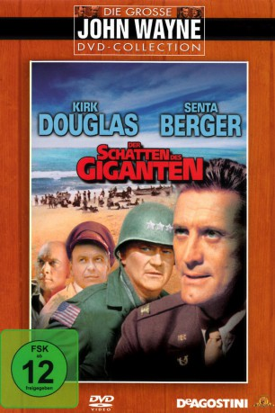

#8435 Der Schatten des Giganten
Alternativ: Cast a Giant Shadow
 
 IMDB-Wertung: 6.4 / 10
IMDB-Wertung: 6.4 / 10  Metascore: 0
Metascore: 0 
Der Schatten der Giganten ist ein US-amerikanischer Kriegsfilm von 1966, der sich mit dem Israelischen Unabhängigkeitskrieg beschäftigt. Er handelt vom jüdisch-amerikanischen Offizier Colonel David Marcus, der nach Gründung Israels in die Schlingen des Nahostkonflikts gerät.
Jahr: 1966
Dauer: 137 Minuten
FSK: 12
Land: USA Studio: United ArtistsTonspuren:
Untertitel:
Auflösung: 1080p (1920x824) Größe: 10065 MB
Genre: Drama, Abenteuer, Krieg, Geschichte
Regisseur: Melville Shavelson
Drehbuch: Ted Berkman
Soundtrack: Elmer Bernstein
Darsteller:
 Kirk Douglas als Col. David 'Mickey' Marcus
Kirk Douglas als Col. David 'Mickey' Marcus Senta Berger als Magda Simon
Senta Berger als Magda Simon Angie Dickinson als Emma Marcus
Angie Dickinson als Emma Marcus- James Donald als Maj. Safir
- Stathis Giallelis als Ram Oren
- Luther Adler als Jacob Zion
- Topol als Abou Ibn Kader
 Ruth White als Mrs. Chaison
Ruth White als Mrs. Chaison Gordon Jackson als James MacAfee
Gordon Jackson als James MacAfee Michael Hordern als British Ambassador
Michael Hordern als British Ambassador Allan Cuthbertson als Immigration Officer
Allan Cuthbertson als Immigration Officer Jeremy Kemp als Senior British Officer
Jeremy Kemp als Senior British Officer Sean Barrett als Junior British Officer
Sean Barrett als Junior British Officer- Rina Ganor als Rona
- Micha Shagrir als Truck Driver
 Frank Latimore als 1st U.N. Officer
Frank Latimore als 1st U.N. Officer Frank Sinatra als Vince Talmadge
Frank Sinatra als Vince Talmadge Yul Brynner als Asher Gonen
Yul Brynner als Asher Gonen John Wayne als Gen. Mike Randolph
John Wayne als Gen. Mike Randolph Gary Merrill als Pentagon Chief of Staff (scenes deleted)
Gary Merrill als Pentagon Chief of Staff (scenes deleted) Winston Churchill als Himself (archive footage) (uncredited)
Winston Churchill als Himself (archive footage) (uncredited) Michael Douglas als Jeep Driver (uncredited)
Michael Douglas als Jeep Driver (uncredited) Geoffrey Palmer als David (uncredited)
Geoffrey Palmer als David (uncredited) Franklin D. Roosevelt als Himself (archive footage) (uncredited)
Franklin D. Roosevelt als Himself (archive footage) (uncredited)- Jimmy Shaw als Jeep Driver (uncredited)
- Joseph Stalin als Himself (archive footage) (uncredited)
- Michael Shillo als Andre Simon
- Roland Bartrop als Bert Harrison
- Robert Gardett als General Walsh
- Michael Balston als 1st Sentry
- Claude Aliotti als 2nd Sentry
- Samra Dedes als Belly Dancer
- Ken Buckle als 2nd U.N. Officer
- Rod Dana als Aide to Gen. Randolph
- Robert Ross als Aide to Chief of Staff
- Arthur Hansel als Pentagon Officer
- Dan Sturkie als Jump Sergeant
- Hillel Rave als Yaakov
- Shlomo Hermon als Yussuff
- Vera Dolen als Mrs. Martinson (scenes deleted)
- Rudolf Hess als Himself at Nuremberg (archive footage) (uncredited)
- Fiorello LaGuardia als Himself (archive footage) (uncredited)
- Danny Perlman als Jeep Driver (uncredited)
Datei: X:\1966\Schatten des Giganten, Der (1966, FSK12, 1920x824).mkv seit 05.03.2018
Festplatte: HD 1900-1970
 Es gibt insgesamt 27 Filme in der Gruppe '1966'
Es gibt insgesamt 27 Filme in der Gruppe '1966'